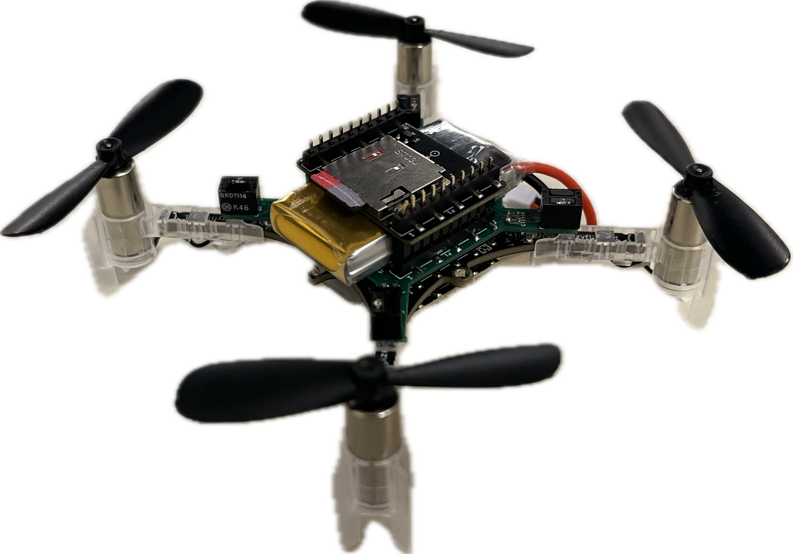

Neural-Augmented Incremental Nonlinear Dynamic Inversion for Quadrotors with Payload Adaptation
Eckart Cobo-Briesewitz, Khaled Wahba and Wolfgang Hönig


Hello! I'm Eckart, a Masters student for Computer Science at the Technische Universität Berlin, working part-time as a student research assistant at the Learning and Intelligent systems Lab.
Eckart Cobo-Briesewitz, Khaled Wahba and Wolfgang Hönig